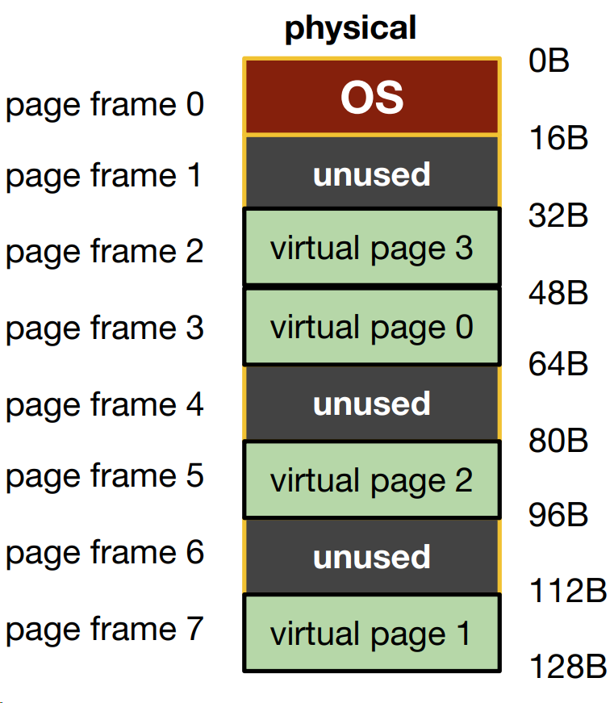
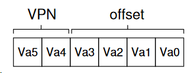
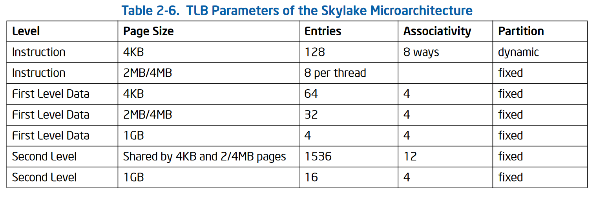
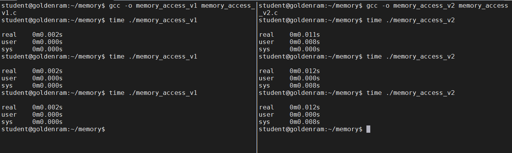
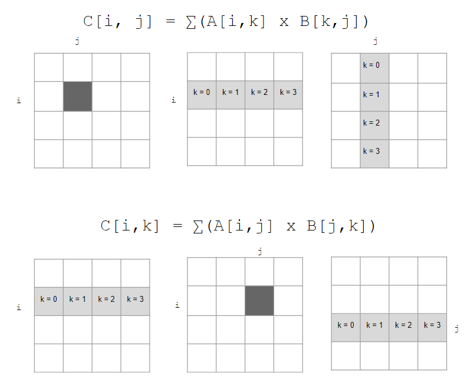
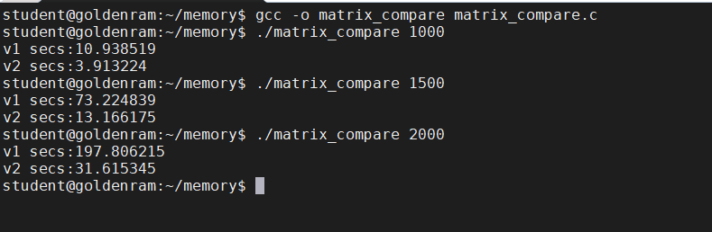

Memory virtualization mechanism: paging and tlb
Contents
Memory virtualization mechanism: paging and tlb#
Key concept
How to virtualize memory with pages to minimize segmentation issues?
How to speed up address translation?
1. What is paging?#
Divide contents into fixed-size units, called pages.
Each page has a page number
Locate contents in pages by an offset (10th word on page 185)
There is a table to tell you which content is on which page
Physical memory is viewed as an array of fixed-size slots called page frames.
Each frame can contain a single virtual memory page

2. After allocation#
For allocation management, the OS keeps a list of free (fixed-size) pages.
This is much simpler than trying to maintain a list of variable-size memory regions
Virtual pages are numbered, which preserve the order of the virtual address space. This allows us to allocate page frame for the virtual pages across the entire available physical memory space.

3. What data structure is needed?#
Page Table: Mapping from virtual page number to physical page frame
VP0 -> PF3
VP1 -> PF7
VP2 -> PF5
VP3 -> PF2
Each process has its own page table
4. Address translation with paging.#
To translate a virtual address, we need:
Virtual page number (VPN)
The offset within the page
For the 64-bit virtual address space, 6 bytes are needed (26 = 64)
There are four pages (2 bytes for VPN)
Each page stores 16 bytes (4 bytes to describe offset of these 16 bytes).

The physical memory has 128 bit, so the physical address will be 7 bytes.
The 2-byte VPN (virtual page number) will be translated to a corresponding 3-byte PFN (page frame number).
The offset remains the same (virtual page has the same size as page frame).

5. New questions!#
What are the typical contents of the page table?
How big are the page tables?
Where are the page tables stored?
Does paging slow down the system?
6. Contents of a page table entry (PTE) for 32-bit x86#
PFN: 20 bits for physical page frame number (page size 4K)P: present bit, whether this page is on memory or on disk (swapped)R/W: read/write bit, whether writes are allowed to this pageU/S: user/supervisor bit, whether user-mode processes can access this pageA: access bit, whether this page has been accessedD: dirty bit, whether this page has been modifiedPWT, PCD, PAT, G: how hardware caching works for this page

7. Size of page table 32-bit x86#
Typical page size is 4KB (run
getconf PAGESIZEin your VM to observe this)Size of address space: 4GB
Number of pages in address space: 4GB / 4KB = 1M
Number of PTE in page table: 1M
How many bits for VPN: 20
How many bits for offset: 12
Each PTE is 4 bytes, therefore the size of a page table is 4B * 1M = 4MB per process
Assume 100 processes running, we have 400MB of all page tables
This is too big
8. How can we reduce the size of the page table?#
Bigger pages.
Hybrid: Page + Base/Bound
Multi-level page tables
9. Bigger pages#
Let the page size be 16K instead of 4K
4GB address space
Number of pages in address space: 4GB / 16KB = 256K
Number of PTE in page table: 256K
How many bits for VPN: 18
How many bits for offset: 14
Each PTE is 4 bytes in size
Total size of page table is 256K * 4B= 1M
Smaller by a factor of 4
Problem:
For small processes, we waste the remaining space of a page.
This is internal fragmentation
10. Hybrid#
Separate page tables for stack, heap, and code.
For each page table, use base/bound register to keep the physical address of the page table.
Use two bits in the virtual address to indicate which segment it is in.
No need to have PTEs for unused paged.
Problem: Bring back all issues of segmentation
Free space management
External fragmentation
11. Multi-level page tables#
Overall idea
Chop up the page table into page-sized units.
If an entire page of page-table entries is invalid, don’t allocate that page of the page table at all (reduce memory space).
A new structure called page directory is needed to keep track of pages’ validity
12. Multi-level page tables#
Two-level table
One entry per page of page table (Page Directory Entry - PDE)
A PDE has a valid bit and a page frame number (PFN)
If the PDE is valid, it means that at least one of the the pages of the page table that the entry points to (via the PFN) is valid.
If the PDE is not valid, the rest of the PDE is not defined.

13. Multi-level page tables: advantages#
Only allocates page-table space in proportion to the amount of address spaces being used.
If carefully constructed, each portion of the page table fits neatly within the page, making it easier to manage memory (think pointer to memory space versus contiguous memory location).
14. Multi-level page tables: cost#
SpaceversusTime: To reduce space, increased access translation steps are needed: one for the page directory and one for the PTE itself.Complexity: Page table lookup is more complex to implement than a simple linear page-table look up.
15. Multi-level page tables: cost#
Each level of multi-level page tables requires one additional memory access:
One to get PTE.
One to get the actual data.
Hardware to the rescue!
Translation Lookaside Buffer (aka TLB, aka address translation cache, aka cache)
16. Translation Lookaside Buffer#
Part of the memory management unit (MMU)
Small, fully associative hardware cache of recently used translations
small, so it’s fast by laws of physics
fully associative, i.e., all entries looked up in parallel, so it’s fast
hardware, so it’s fast
It is so fast that the lookup can be done in a single CPU cycle.
A successful lookup in TLB is called a TLB hit, otherwise it is a TLB miss
17. What is in TLB?#
Lookup entries: VPN -> PFN plus some other bits
A TLB typically has 32, 64, or 128 entries

18. First issue with TLB#
Context switch invalidates all entries in TLB. Why?
Because the VPN stored in a TLB entry is for current process, which becomes meaningless when switched to another process.
Could lead to wrong translation if not careful.
Possible solutions:
Simply flush the the TLB on context switch, i.e., set all valid bits to 0.
Safe, but inefficient.
Think of two Processes A and B that frequently context switch between each other.
Add Address Space Identifier (ASID) to TLB entry
It’s basically PID, but shorter (e.g., 8 bits instead of 32 bits)
Avoids wrong translation without having to flush all entries
19. Second issue with TLB#
Replacement policy
When TLB is full, and we want to add a new entry to it, we will have to evict an existing entry.
Which one to evict?
20. TLB and locality#
Processes only use a handful of pages at a time.
A TLB with 64 entries can map 64 * 4K = 192KB of memory, which usually. covers most of the frequently accessed memory by a process within certain time span.
In reality, TLB hit rates (hit / (hit + miss)) are typically very high (> 99%).
Caching is an important idea, use it when possible.
21. Hands on: memory access#
Launch a tmux session called
memwith two vertical panels.Create two vertical panels.
In the left panel, change to directory
memoryand creatememory_access_v1.cwith the following contents:
In the right panel, change to directory
memoryand creatememory_access_v2.cwith the following contents:
Questions
Which is faster?
Why?
In the left panel, compile and timed run
memory_access_v1.c:
gcc -o memory_access_v1 memory_access_v1.c
time ./memory_access_v1
In the right panel, compile and timed run
memory_access_v2.c.
gcc -o memory_access_v2 memory_access_v2.c
time ./memory_access_v2

22. Demand paging#
In an ideal world, we have an infinite amount of RAM …
In reality:
Many processes use memory, and in combination exceeds the size of physical memory.
One process’ memory usage can be larger the size of physical memory.
OS supports a mechanism to offload exceed memory demands to hard disks to store pages that are not being accessed.
From the perspective of processes, everything is still within a large virtual address space.
This mechanism is called demand paging.
23. Demand paging#
Swap space: a reserved space on hard disk for moving pages back and forth
Linux/Unix: a separate disk partition
Windows: a binary file called
pagefile.sys
Initially, pages are allocated in physical memory.
As memory fills up, more allocations require existing pages to be evicted.
Evicted pages go to disk (into swap space).
24. Demand paging#
Present bit (
P) indicates whether the page is in memory or on disk.P= 0 (on disk), then the remaining bits in PTE store the disk address of the page.When the page is loaded into memory, P is set to 1, and the appropriate PTE contents are updated.
25. Demand paging control flow#
If the page is in memory, keep going.
If the page is to be evicted, the OS sets
Pto 0, moves the page to swap space, and stores the location of the page in the swap space in the PTE.When a process access the page, the 0 value of P will cause a system trap called page fault.
The trap run the OS
page_fault_handler, which locates the page in the swap file.The trap reads the page into a physical frame, and updates PTE to points to this frame.
The trap returns to the process, and the page will be available for the process.
26. Dirty bit#
If the page has been not been modified (
dirty== 0) since it was loaded from swap, nothing will need to be written to disk when the page is evicted again.If the page has been modified (dirty == 1), it must be rewritten to disk when it is evicted.
This mechanism is invented by Corbato. (Who is Corbato?).
Issue:
When we have to evict a page to disk, which one should we choose?
27. Replacement algorithms#
Reduce fault/miss rate by selecting the best victim to evict.
Unrealistic assumption: we know the whole memory reference trace of the program, including the future ones at any point in time.
Algorithm 1: evict the one that will never be used again.
Does not always work.
Algorithm 2: evict the page whose next access is furthest in the future.
Belady’s algorithm (“A study of replacement algorithm for a virtual-storage computer”, IBM Systems Journal, 5(2), 1966).
Caveat: we don’t know the future.
Belady’s algorithm serves as the benchmark to see how close other algorithms are to being perfect!
28. We predict the future based on patterns …#
Locality: the patterns in computer programs’ behaviors.Spatial locality: If an address A is accessed, then addresses A - 1 and A + 1 are also likely to be accessed.Temporal locality: if an address is accessed at time T, then it is also likely to be accessed again in the future T + Δt.This is not a set-in-stone rule, but in general, it is a good heuristic to remember when designing computing systems.
29. Example policies#
FIFO:
Good: oldest page is unlikely to be used again.
Bad: oldest page is likely to be used again.
Random:
Based purely on luck.
TLB replacement is usually random.
LRU:
Least recently used.
Close to optimal.
Not very easy to implement.
30. Matrix multiplication#
Which approach is faster?
Why?

31. Hands on: matrix multiplication#
In the left panel, change to directory
memoryand creatematrix_compare.cwith the following contents:
Questions
Which matrix multiplication function (
matrix_mul_v1ormatrix_mul_v2) represents which multiplication approach from slide 30?Compile and run
matrix_compare.c:
gcc -o matrix_compare matrix_compare.c
./matrix_compare 1000
./matrix_compare 1500
./matrix_compare 2000
